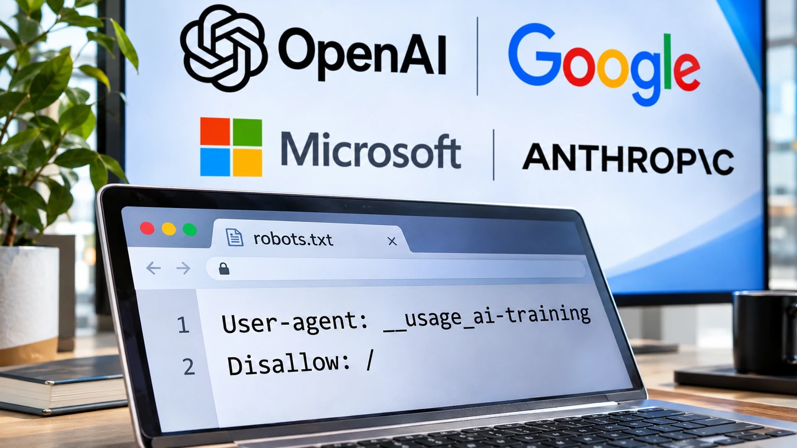

OpenAI, Google, Microsoft and Anthropic Back Shared AI Training Controls for Publishers
Four AI companies have backed a shared publisher preference mechanism, but the controls remain voluntary and implementation is not yet uniform.

OpenAI, Google, Microsoft and Anthropic are backing a common mechanism for publishers to signal how AI crawlers may use website content. The proposed controls remain voluntary. The announcements on October 30 are significant for publishers that currently manage a patchwork of instructions addressed to different AI crawlers. The emerging approach builds on the familiar robots.txt file, although supporting the proposal does not mean that every service has already implemented it or that every form of automated content use will stop.
Publishers seek a clearer choice
For more on investment and strategic questions affecting major AI providers, see our OpenAI funding analysis.
News organizations fund reporting, verification, editing, photography and distribution. Their business models may depend on traffic, advertising or subscriptions. Generative AI complicates the relationship between an information provider and the automated system that reads its pages. A model may learn from publicly available material while another AI-powered service may use recently retrieved information to answer a question without producing the same referral traffic as conventional search.
Publishers often want to make different decisions about different uses. Allowing a search engine to index a story does not necessarily mean agreeing to use that story for model training. Likewise, rejecting model training is not automatically the same as rejecting every search citation or retrieval for an answer. A common preference mechanism is intended to make these choices easier to express.
What the new signal does
The technical proposal describes a shared AI-training preference that website owners can place in robots.txt. Instead of maintaining only separate provider-specific instructions, a publisher could express a general position that participating services understand. The proposal uses the token __usage_ai-training, associated with restrictions expressed in familiar robots.txt syntax. The details of syntax and interpretation should be checked against the relevant specification and each provider’s documentation before a live website is reconfigured.
This is not a new internet law or a mechanism that physically prevents all bots from downloading pages. Robots.txt is a communication method: cooperative agents may honor stated preferences, while noncompliant crawlers may ignore them. It also does not settle whether past training was legally permitted, establish royalty payments or require all AI businesses to participate.
Companies will not implement it simultaneously
The announcements described different adoption schedules. OpenAI plans to support the shared preference over the coming months, while Google and Microsoft have signaled implementation during 2027. Existing controls, including those specific to an individual company, continue to matter in the transition. Anthropic has participated in technical work around the proposal. Publishers therefore should not assume a single new line automatically changes the behavior of all AI systems today.
For a small digital publisher, the eventual benefit could be administrative simplicity. A single set of preferences may reduce the risk of forgetting a newly introduced crawler or misunderstanding a company-specific option. Yet a shared format does not remove the need to monitor implementation, verify server configurations or decide how different AI products should interact with editorial material.
Search visibility and AI training are distinct
The most consequential commercial question may be how restrictions affect discoverability. Publishers want control over training while remaining visible to potential readers. Search indexing, the retrieval of sources for an AI answer and the creation of model training datasets are technically and economically different activities. A simplistic blanket block may have consequences that a narrowly targeted training preference does not. The details depend on the behavior of each provider.
Media businesses therefore need to evaluate their own priorities rather than treating a universal opt-out as automatically beneficial. A specialist publication supported by subscriptions may reach a different conclusion from a free site that relies heavily on audience growth and referral visits. Publishers that license material to AI businesses may also have contractual arrangements that differ from public crawler preferences.
An important development, but not a full settlement
The shared proposal reflects a growing acknowledgment that the open web needs more explicit rules for automated AI use. Its influence will depend on practical implementation, transparent documentation and the willingness of AI developers to respect expressed preferences. It cannot independently resolve copyright litigation, licensing negotiations or the financial pressure felt by publishers as audience behavior changes.
For news organizations, the next sensible step is to study the emerging standard without rushing to change production settings. They should review existing crawler instructions, identify which uses of content they want to permit and follow the implementation status of the companies involved. The October announcements may become an important piece of the web’s future technical infrastructure, but the actual balance of power between publishers and AI platforms will be determined by enforcement, user behavior and the economics of content distribution.
Sources and methodology
Primary company statements and technical documentation; market interpretation is TTN Finance editorial analysis.